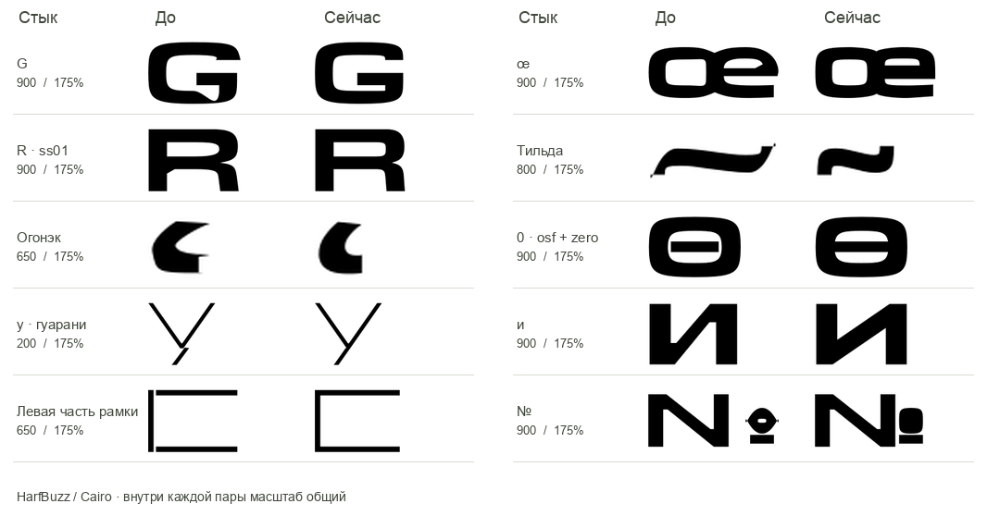

Стыки без замера
На карточках — рисунок до правок. Рыжим отмечены сегменты, у которых не нашлось встречной границы для замера толщины. Нажми на глиф, чтобы открыть его текущий контур при том же весе и ширине.
Дефекты на широких начертаниях до правок: клин у G и в просветах œ и æ, рассечение концов тильды, тонкий выступ у огонэка, отрыв перекладины у старостильного нуля.
Загрузка атласа…
Контрольные глифы до и после правок

Что покрыто визуальным просмотром
Аудит предыдущей сборки дал 328 656 пропусков в 55 390 вариантах глифов при 10 весах и 7 ширинах. На 49 листах показаны 2 048 выбранных вариантов, включая 443 на промежуточных ширинах 107, 137,5 и 162,5. Для каждого из 846 затронутых глифов каждый индекс непомеренного сегмента представлен минимум в одном начертании. При изменении числа сегментов подбор запускался отдельно. Всего 10 540 комбинаций глифа, числа сегментов и индекса границы.
Масштаб каждой карточки подобран под её контур. Для сравнения физических толщин используй «Каждый штрих». Здесь видны выступы, срезы кривых и отрывы. Повторяющиеся наблюдения одного сегмента по всей сетке объединены.
Изменение числа частей и просветов при расширении
На тех же 70 положениях осей заливка проверена по ненулевому правилу. Пары чисел означают число отдельных частей и закрытых просветов. Слева — ширина 125%, справа — ширина в строке. Учтены области площадью более 8 единиц². Для каждой версии используется её собственный образец при 125%. Кривые разделены на восемь отрезков, поэтому мелкие расхождения требуют визуальной проверки.
До правок счёт менялся у 122 глифов в 406 сочетаниях осей. Сейчас осталось девять сочетаний у двух глифов. У ỡ тильда отделяется от верхнего рожка при весе 900. У базового глифа yen образуется небольшой треугольный просвет между развилкой и верхней чертой. На всех пяти отмеченных сочетаниях HarfBuzz подставляет для ¥ другой контур, у которого стык закрыт.
| Глиф | Вес / ширина | До правок | Сейчас |
|---|